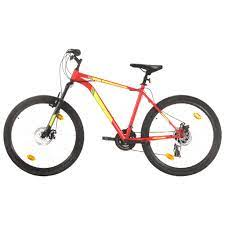
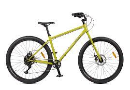
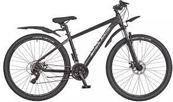

Велосипеды
Велосипеды - это универсальные транспортные средства, покоряющие улицы городов и живописные тропы природы. Сочетая в себе элегантный дизайн и эффективность передвижения, велосипеды стали неотъемлемой частью активного образа жизни. Они способствуют поддержанию здоровья, снижению стресса и являются экологически чистым средством передвижения. Вне зависимости от того, прокатиться по городским улицам или исследовать дальние пейзажи, велосипед всегда приносит радость и свободу передвижения.


